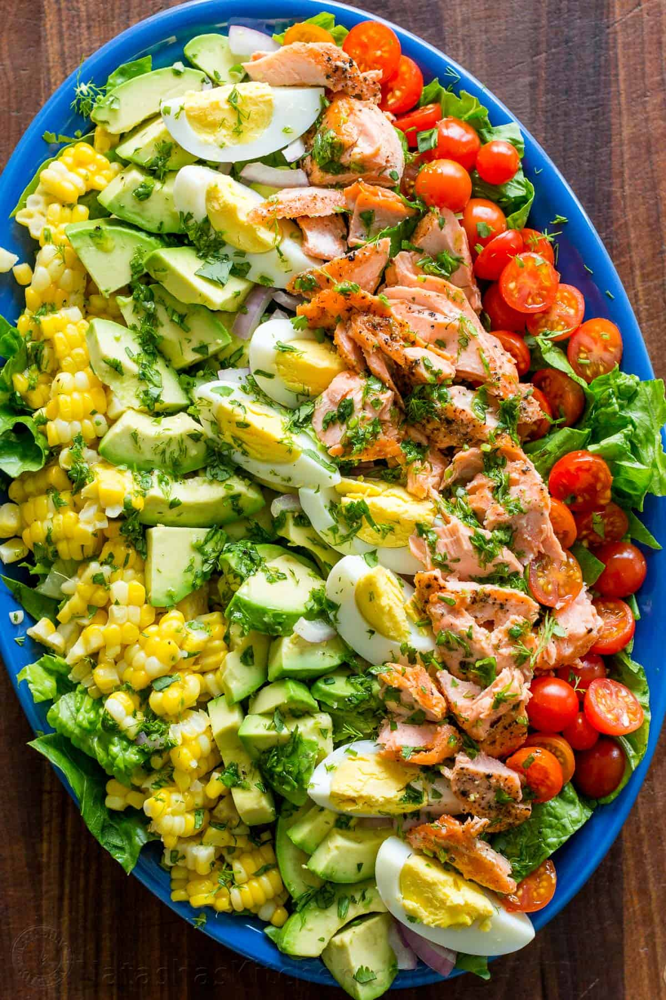

Salmon Cobb Salad

Description
Salty, yummy, refreshing, and light. The dill adds an unexpected, amazing flavor. It's addicting! Lots of great protein in this one, with the eggs and salmon.
Ingredients
- ¾ cup buttermilk
- ½ cup mayonnaise
- 3 tablespoons chopped fresh dill
- 1 tablespoon lemon juice
- ½ teaspoon salt
Directions
- Whisk buttermilk, mayonnaise, shallot, dill, lemon juice, and salt together in a bowl until dressing is smooth; refrigerate.
- Mix lettuce, bacon, avocado, eggs, and salmon together in a bowl. Add dressing and toss until coated; season with black pepper.